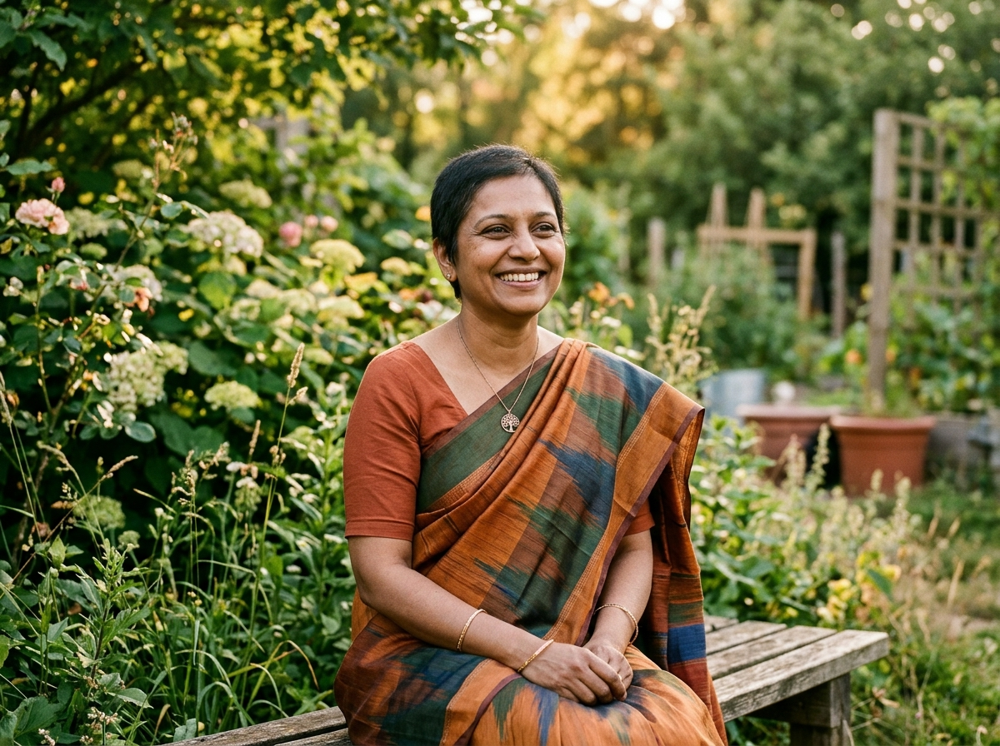

Featured Journey · Breast Oncology Survivor
Demonstration Profile
“The Garden After the Storm: Finding Strength in Early Action”
“When I felt an unusual lump in 2024, my first reaction was silence. I feared what it would mean for my children and the cost of chemotherapy. But connecting with an early screening camp at Pink Ribbon and receiving guidance on hospital welfare transformed terror into a plan. Today, completing treatment in Lahore, my message to every sister is simple: do not let hesitation rob you of tomorrows.”
Attribution: Tahira M. (Demonstration Profile, Lahore)